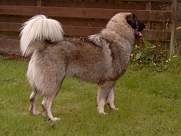
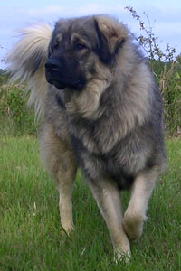
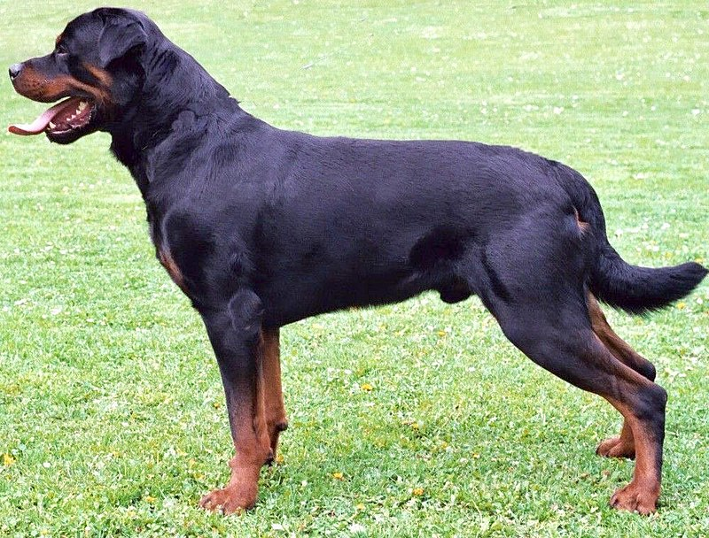
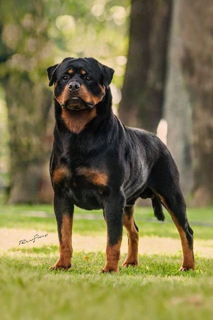
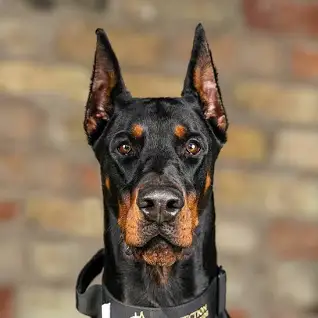
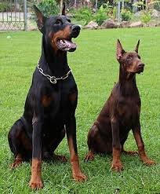

Qeni (Canis lupus familiaris) është një lloj i zbutur i ujkut, anëtar i familjes Canidae dhe rendit Carnivora. Termi përdoret për të dy variantet i egër dhe i përkëdhelur. Qeni e ka prejardhjen nga familja e ujqërve. Qeni shpejt u bë i njohur kudo në kulturën e të gjitha pjesëve te botës, zakonisht në vendbanimet e hershme të njeriut. Besohet se emigrimi i suksesshëm nëpër ngushticën e Beringut nuk mund të ketë qenë i mundur pa qen te cilët tërhiqnin slitën. Qentë kryejnë punë të shumta për njerëzit, të tilla si gjueti, mbrojtje, ndihmojnë individët me të meta. Aktualisht, vlerësohet se në botë ka 400 milionë qen.
Deltari ilir është plot fuqi, i madh, këndrejt, qimegjatë, deltarë i pazëvendësueshëm, dhe ruajtës i mirë. I fuqishëm, me pamje të vendosur, me kokë masive ndërtim të thukët, me këmbë të fuqishme dhe muskulore. Ka shikim të zjarrtë inteligjent dhe është i guximshëm. Ka karakter të pa djallëzuar është i ashpër kur e kërkon nevoja por jo agresiv. TRUPI Lartësia: te mashkujt 67-75 cm ndërsa te femrat - 60-65 cm Pesha: te meshkujt - 50-70 kg ndërsa te femrat - 40-50 kg Tek qentë meshkuj mbi 50% të ekzemplarëve dominon lartësia 70cm cm ndërsa te femrat 65 cm. KOKA Gjatësia e kokës te qentë është 27-32cm mesatarisht 30cm ndërsa te femrat 24-29 cm mesatarisht 27cm. Proporcioni kafkë-turi, te meshkujt 17,4cm : 12,6cm te femrat 15,3cm : 11,7cm, raporti 60:40 turiri përbën 2/5 e kokës kurse kafka 3/5 te qentë ndërsa 5/9 te femrat. NGJYRA Te Deltari ilir kemi disa varietete të ngjyrave ku sipas përqindjes dominojnë: Ngjyra Vidra apo Tigër me 30%, ngjyrë hiri me të gjitha varietetet 20%, ngjyrë e verdhë me turi të zi 20%, ngjyrë e Bardhë 20%, dhe Kontra maska 10%. Karakteri Deltari Ilir eshte i shoqerueshem me njeriun eshte i ashper por kurre agresiv. Ne pergjithesi eshte i qete por kur dikush paraqet rrezik per kopene apo per objektin atehere shendrrohet ne nje armik te frikshem . Deltari ilir ndryshe nga racat e tjera qe jane besnik ndaj pronarit si dhe ndaj familjes deltari ilir lidhet dhe e done vetem pronarin gjate gjithe jetes se tij. Historia Deltari Ilir ose Qeni i Sharrit është racë autoktone Ilire e krijuar në Gadishullin Ilirik (Ballkanik) para mijëra viteve. Rreth krijimit të kodit gjenetikë të kësaj race ekzistojnë dy teori: E para thotë se kanë prejardhje nga qentë e Kaukazit para 2500 viteve, teori e cila nuk qëndron dhe Teoria e dytë e cila thotë se kanë prejardhje nga doga e Indisë/Tibetit e cila ka ardhur para mijëra viteve në kohën e Lekës (Aleksandri i Madh) në Gadishullin Ilirik në trojet ilire ku është kryqëzuar me qentë vendas dhe janë krijuar Qentë Molos, Plini thoshte se ilirët u dhanë qenj aq të mëdhenj Lekës saqë vrisnin si luanët, e që mundnin luanj, elefantë e dema në stadiume. Në ato troje ka banuar fisi i njohur ilir Molosët i cili është marrë me bujqësi ekstensive dhe ka kultivuar qen të tillë autoktonë, prej të cilëve e ka prejardhjen dhe ekziston raca autoktone Delari ilir.
 Rottweiler është një racë qensh shtëpiake. Qentë njiheshin në gjermanisht si Rottweiler Metzgerhund, që do të thotë qentë e kasapëve Rottweil, sepse përdorimi i tyre kryesor ishte të grumbullonin bagëti dhe të tërhiqnin karrocat e ngarkuara me mish të therur në treg. Kjo vazhdoi deri në mesin e shekullit të 19-të, kur hekurudhat zëvendësuan vozitjen. Edhe pse ende përdoren për të grumbulluar bagëti në shumë pjesë të botës, Rottweilerët tani përdoren gjithashtu si qen kërkimi dhe shpëtimi, qen roje dhe qen policie.
 Dobermani është një racë e madhe e qenve me origjinë nga Gjermania...
Dobermann, ose Doberman Pinscher në Shtetet e Bashkuara dhe Kanada, është një racë mesatare e madhe e qenit shtëpiak që u zhvillua fillimisht rreth vitit 1890 nga Louis Dobermann, një mbledhës taksash nga Gjermania. Dobermann ka një surrat të gjatë. Ai qëndron në jastëkët e tij dhe zakonisht nuk është me këmbë të rënda. Idealisht, ata kanë një ecje të barabartë dhe të këndshme. Tradicionalisht, veshët priten dhe ngjiten dhe bishti është i lidhur. Megjithatë, në disa vende, këto procedura tani janë të paligjshme dhe shpesh konsiderohen mizore dhe të panevojshme. Dobermanët kanë shenja në gjoks, putra/këmbë, surrat, sipër syve dhe poshtë bishtit. Dobermanët njihen si shoqërues dhe qen roje inteligjente, vigjilente dhe me këmbëngulje besnike.
 